Els Ports · Castellón
Olocau del Rey
Un pueblo del interior de Castellón con un castillo del siglo XI, cinco ermitas, treinta y tres masías y una red de vías pecuarias que lo une con toda la comarca.
- S. XICastillo de Olcaf
- 5Ermitas
- 33Masías
- 17Vías pecuarias
- Els PortsComarca (Castellón)
Patrimonio de Olocau del Rey


Información general

Cómo llegar
Instrucciones de como llegar al pueblo desde las principales localidades.

De Olocaf a Olocau del Rey
Breve historia de la villa de Olocau.

La villa, ayer y hoy
Recorrido por las últimas décadas de la villa.

Edificios
Principales edificios más representativos.

Masías
Construcciones aisladas ubicadas en el término municipal de Olocau del Rey.

Datos y estadísticas
Evolución de la población.

Geología y morfología
Descripción del terreno y los principales elementos que lo componen.

Sus vías pecuarias
Red de vías que cruzan el municipio.

Fiestas y tradiciones
Principales fiestas y celebraciones del pueblo.


Una web empezada en el año 2000
Joaquín Miguel «Ximo» Conesa García empezó esta web en el año 2000 para reunir en un solo sitio todo lo que se sabía de Olocau del Rey, y la dedicó a su padre. No pudo terminarla. Veinticinco años después la familia ha retomado su proyecto, con el mismo contenido y un diseño nuevo.